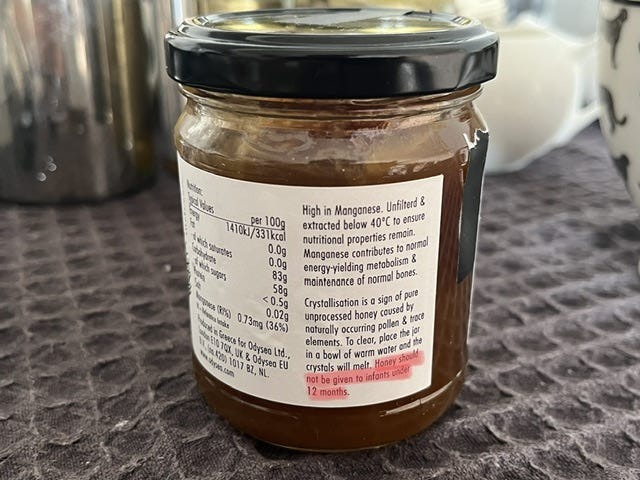

今天从超市买了一瓶蜂蜜，发现标签上写着：蜂蜜不应该给 12 个月以下的婴儿吃。（图 1）因为我不是婴儿，我也没有婴儿，所以开头我没多想。但是过了一会，我开始琢磨这个事。因为我知道蜂蜜是好东西，但为什么标签说不能给婴儿吃蜂蜜呢？于是我用“why babies can't have honey”这个标题搜了一下网络，发现好多文章，甚至包括大英百科全书，都说蜂蜜里面可能有一种叫做 Clostridium 的细菌，会导致 infant botulism（婴儿肉毒症）。（图 2）